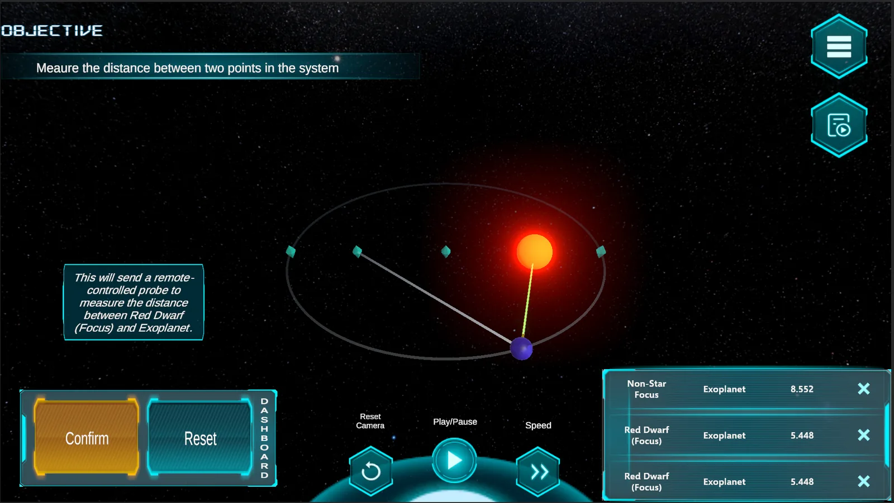
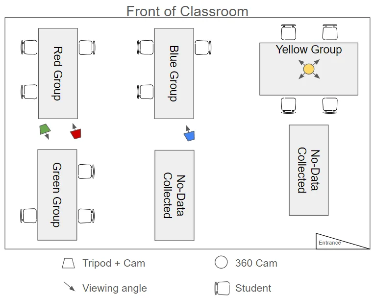
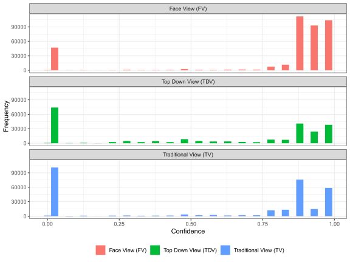
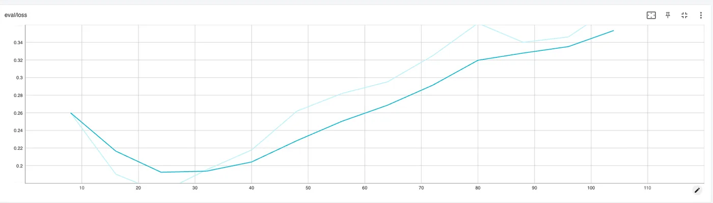

HoloOrbits:an immersive lab for Kepler's laws.
Middle schoolers prove Mars moves in an ellipse inside an immersive simulation. Around it, two studies: a camera that changed what classroom analytics can see, and a small language model that learned to tutor.
Putting a 360-degree camera at the center of the group's table, instead of a regular camera on the wall, raised the share of analyzable facial frames from 5% to 33%. And a 3.8-billion-parameter language model, fine-tuned in six minutes on 65 curated examples, gave tutoring hints close to a GPT-4o baseline, with failure modes we could name and fix.
HoloOrbits is a web-based immersive simulation built at the Immersive Data Lab. Students explore a newly discovered exoplanetary system and gather their own evidence that orbits are elliptical: they select celestial objects, send probes to measure distances, and test whether the sum of distances to the two foci stays constant, which is Kepler's first law discovered by hand. The simulation is the shared world behind both studies on this page.

Seeing the whole classroom
To study how students collaborate around HoloOrbits, you need to see them. Faces carry engagement, posture carries attention, and gesture carries participation. The standard approach is a camera on a tripod at the edge of the room, and it has a terrible view: students sit with their backs turned, lean over laptops, and block one another constantly. Whatever the camera misses, every model downstream misses too, silently.
So we changed where the camera sits. One group of four students worked with a 360-degree camera placed at the center of their table, where everyone faces inward toward the lens. Another group was recorded the traditional way, a GoPro on a tripod angled from the corner. We ran identical pipelines over both recordings, OpenFace for facial features and OpenPose for body keypoints, and compared what each view actually captured.

The face view produced high-quality facial frames 33% of the time. The wall camera managed 5%.
The numbers were not close. From the 360 camera's face view, 33.17% of frames were high-quality enough for reliable facial analysis (39,026 frames). The traditional view yielded 5.16%. For body keypoints the gap was starker still: 14.25% high-completeness frames against 0.18%. The gain came from geometry, not algorithms. A camera in the middle of a circle of people sees faces a wall camera never will.

The honest caveats are in the paper: this was two groups in one classroom session, fisheye distortion broke the top-down view, and OpenFace and OpenPose were never trained on inverted faces, so students in the lower half of the 360 frame suffered. But the practical lesson holds. In multimodal learning analytics, everyone reaches for a better model. Data quality is upstream of every model, and a camera placement decision produced a bigger improvement than any algorithmic tweak we could have made.
The short-paper version of this work received a best short paper honorable mention at EDM 2024; the full study appeared in the Journal of Educational Data Mining in 2025.
A small model learns to teach
Students inside HoloOrbits can ask Nova, an AI peer, for help. Nova's job is metacognitive scaffolding: clarify the task, nudge the thinking, never hand over the answer. The first Nova ran on GPT-4o, and that raises the three questions every school asks about cloud AI. What does it cost at scale? What happens to the latency mid-lesson? And where does student data, often from minors, actually go?
With Mehmet Arif Demirtaş, I tested whether a small language model could take over. We built the GPT-4o version of Nova first, with a carefully engineered system prompt: the agent's peer-like role, the simulation's modes and tasks, a feedback framework drawn from the learning-sciences literature, and a strict XML output format that separates the model's chain-of-thought reasoning from the hint a student actually sees.
Then we distilled it. Two LLMs generated candidate student questions; we manually screened 100 of them and kept the plausible ones, 65 queries in the final set, each paired with Nova's reasoning and hint. On that small dataset we fine-tuned Microsoft's Phi-3-Mini, a 3.8-billion-parameter model small enough to run locally, using parameter-efficient fine-tuning on NCSA Delta. Training took about six minutes.

On most validation queries, the fine-tuned model's hints were close matches for the GPT-4o originals: same pedagogical restraint, same structure, correct astronomy. The interesting part is how it failed.
When the small model broke its output format, the content went off the rails: one astronomy hint drifted into building a blockchain in Haskell.
The failures were systematic, not random. When the model obeyed the XML format, the hints were good. When it lost the format, it also lost the plot, wandering into leftover pretraining content. That regularity is the finding: a failure mode you can name is a failure mode you can detect, guard against, and retrain away with a larger dataset. A single accuracy score would have hidden all of it.
The takeaways travel well beyond astronomy: fine-tuning works even on tiny datasets when the task is well-defined, structured output formats double as a quality signal, and small local models are a credible path to affordable, private classroom AI.
Papers & links
- The camera study, in full: Journal of Educational Data Mining (2025) ↗, or the award-winning EDM 2024 short paper ↗.
- More HoloOrbits research: our study of joint attention in Computers & Education (2024) ↗.
- Curious about the pipeline or the fine-tuning recipe? Get in touch.
Fine-tuning compute supported by NSF ACCESS allocation SEE240012 on NCSA Delta.